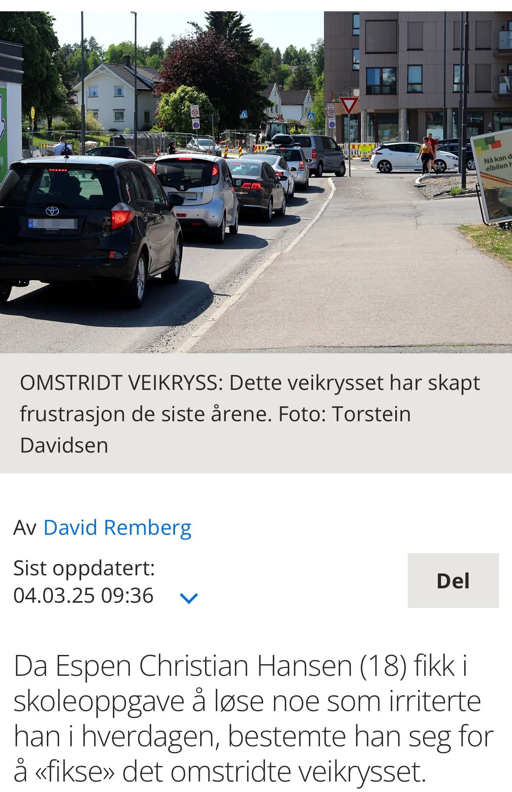
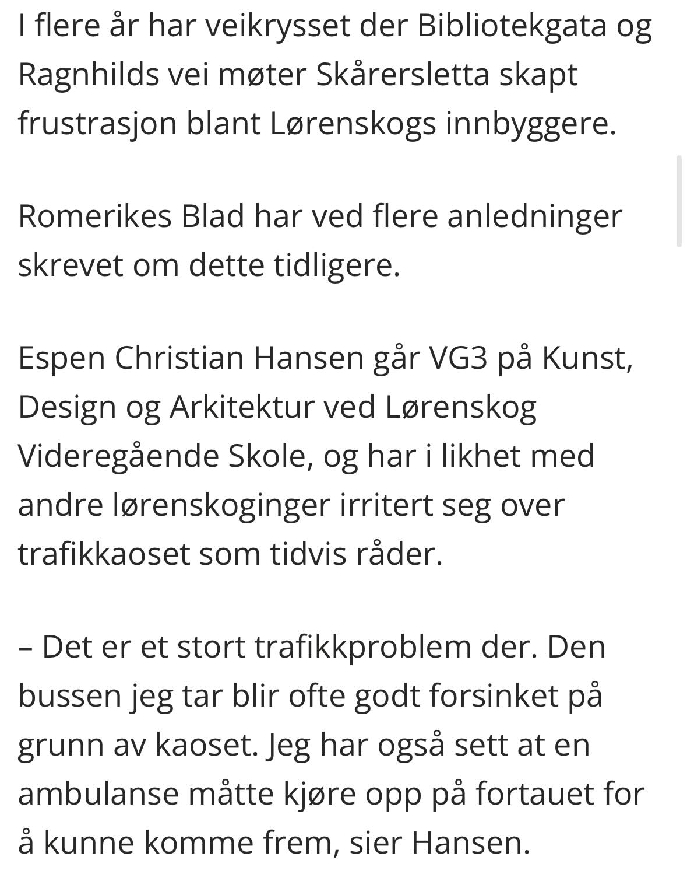

I denne oppgaven redesignet jeg et veikryss ved Metro senter. Dette krysset havnet i avisen!


Dette var en veldig morsom oppgave jeg satte meg dypt inn i, og føler jeg fikk laget et veldig godt resultat.
Og så videre... I denne oppgaven jobbet jeg blant annet med Adobe Illustrator, PhotoShop, Blender, AutoCAD og InDesign. Jeg fulgte håndbøkene til Statens Vegvesen og ville lage et så godt veikryss som jeg kunne.
Les hele oppgaven:ekstra